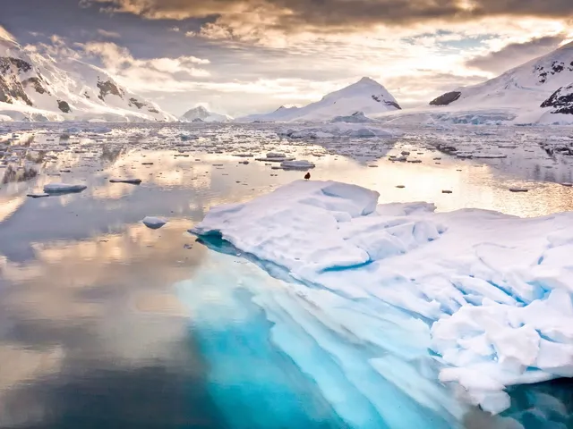
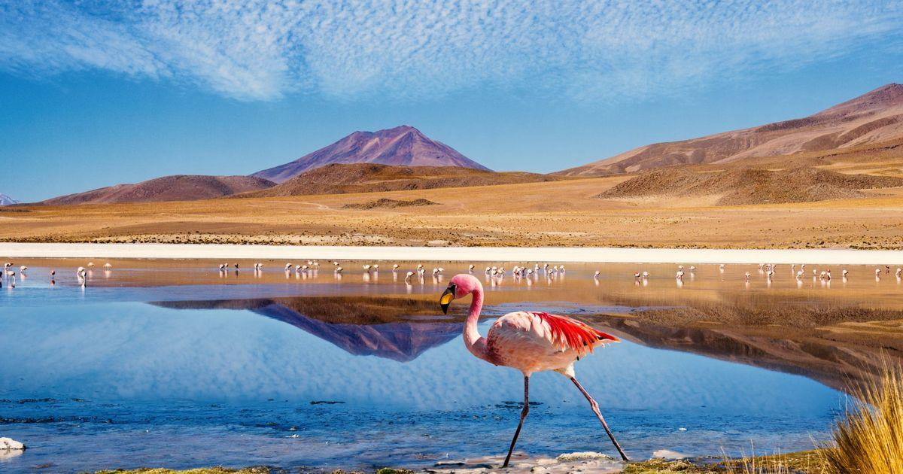
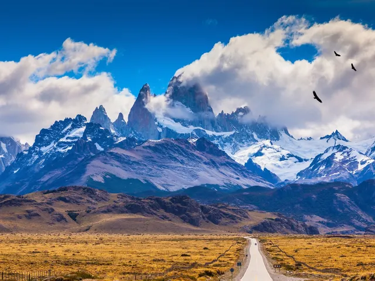
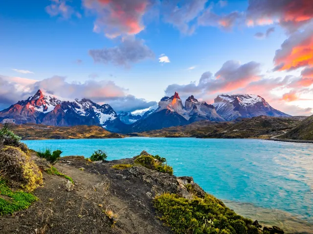
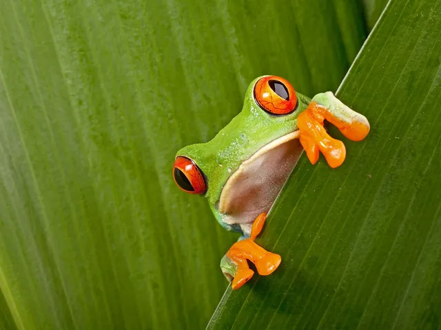
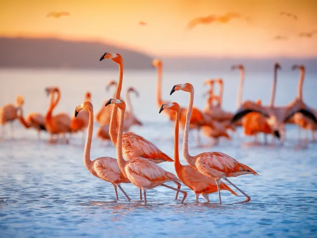
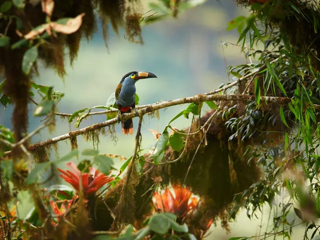
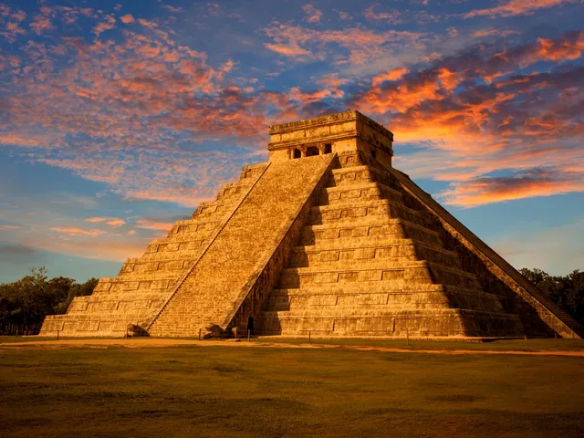
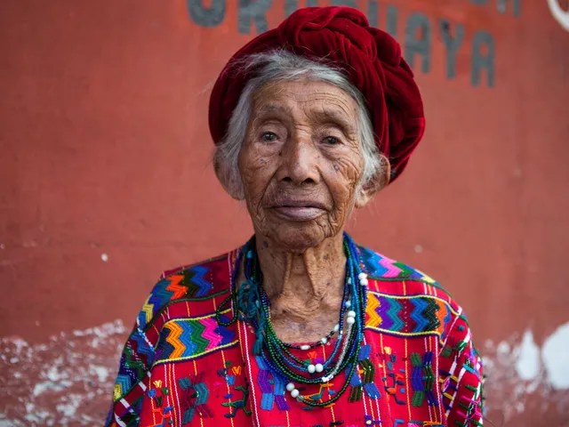
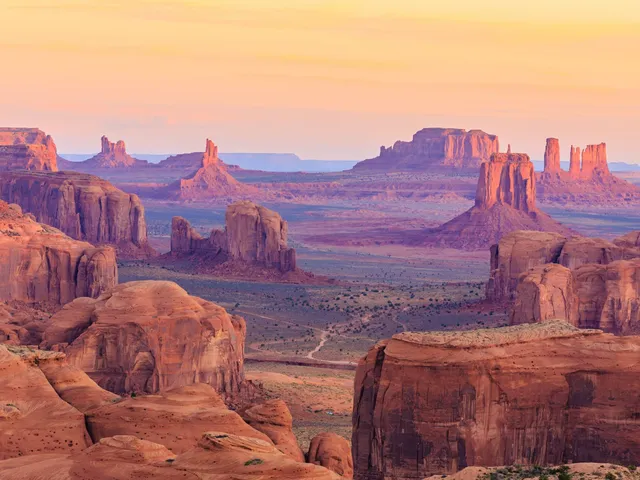

Start / Reiseziele
Lateinamerika in seinen Facetten
Unsere schönsten Reiseziele
Von den Anden und dem Amazonas bis in die Weiten Patagoniens: América Special Tours plant Ihre Lateinamerika-Reise individuell und nach Ihren Interessen.
Wohin möchten Sie aufbrechen?
Die Länderübersichten zeigen die veröffentlichten Reiseideen des Originalportfolios. Route, Dauer und Erlebnisse stimmen wir anschließend persönlich mit Ihnen ab.









Mittelamerika
Guatemala, Nicaragua, Panama und weitere persönliche Routen.
Länder und Reiseideen ansehen ↗

Ihre Wünsche zuerst
Wir helfen bei der Wahl Ihrer Route.
Erzählen Sie uns, was Sie reizt – unser Team berät Sie persönlich.